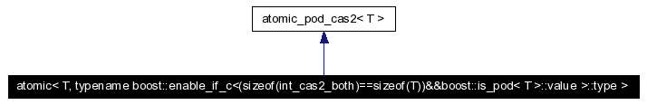
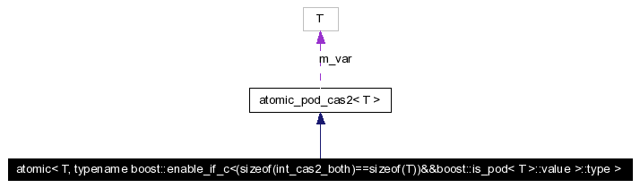

クラス テンプレート atomic< T, typename boost::enable_if_c<(sizeof(int_cas2_both)==sizeof(T))&&boost::is_pod< T >::value >::type >
atomic access to POD type capable of CAS2.
[詳細]
#include <atomic.h>
atomic< T, typename boost::enable_if_c<(sizeof(int_cas2_both)==sizeof(T))&&boost::is_pod< T >::value >::type >に対する継承グラフ

[凡例]atomic< T, typename boost::enable_if_c<(sizeof(int_cas2_both)==sizeof(T))&&boost::is_pod< T >::value >::type >のコラボレーション図
[凡例]すべてのメンバ一覧
説明
template<typename T>
class atomic< T, typename boost::enable_if_c<(sizeof(int_cas2_both)==sizeof(T))&&boost::is_pod< T >::value >::type >
atomic access to POD type capable of CAS2.
atomic.h の 125 行で定義されています。
このクラスの説明は次のファイルから生成されました:
KAME2に対してFri Jan 25 00:34:32 2008に生成されました。
 1.4.6
1.4.6